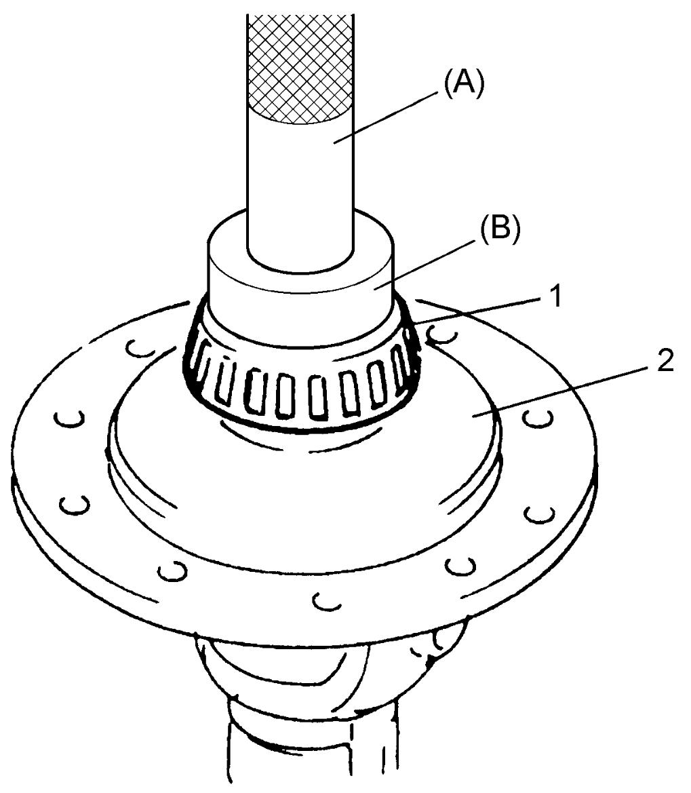

5B
| Differential Disassembly and Reassembly |
Disassembly
 "Expand image")
2)Remove right bearing in the same manner as in Step 1).
3)Support differential case (1) with soft jawed vise.
4)Remove final gear bolts and remove final gear.
5)Remove differential pinion shaft pin using special tool and hammer, and then disassemble components parts.

 "Expand image")
| 2. | Differential side gear |
Reassembly
1)Install differential pinion, side gear and pinion shaft to differential case, and measure backlash and thrust play of differential side gear using special tools as follows.
If measured value is out of specification, select suitable side gear washer and check again.
If measured value is out of specification, select suitable side gear washer and check again.
a)Differential side gear backlash [a]
•Hold differential assembly with soft jawed vise and apply measuring tip of dial gauge to side gear as shown in figure.
•Fixing differential pinion, turn side gear back and forth and read dial gauge.
•Fixing differential pinion, turn side gear back and forth and read dial gauge.
Differential side gear backlash
0.10 – 0.15 mm (0.0039 – 0.0059 in.)
b)Differential side gear thrust play [b]
•Hold differential assembly with soft jawed vise and apply measuring tip of dial gauge to side gear as shown in figure.
•Move side gear up and down by hand and read dial gauge.
•Move side gear up and down by hand and read dial gauge.
Differential side gear thrust play
0.03 – 0.31 mm (0.001 – 0.012 in.)
 "Expand image")
2)Install new differential pinion shaft pin from right side till the depth from differential case surface is about 1.2 mm (0.047 in.).
3)Press-fit left bearing (1) using special tool and hydraulic press.

 "Expand image")
| 2. | Differential case |
4)Press-fit right bearing (1) using special tools and hydraulic press.
 "Expand image")
| 2. | Differential case | 3. | Differential side left bearing |

 "Expand image")